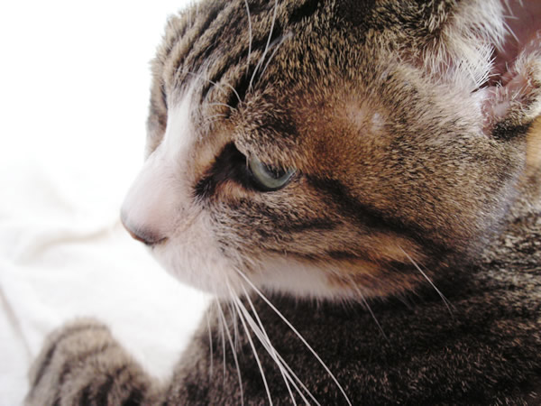

上井宗一朗の自己紹介ページ

最近はまっていること
APEXやねこの写真をとること
最近はAPEXを少しやっていて、ヴァロナントもやっていました。
友達とみんなで集まりわいわいやるゲームはとても楽しいです。
ねこは昔から好きで生まれた時から一緒にいます。
うちで飼っているねこは、常に自分の近くか見えるところにいるのでその写真をとるのにもはまっています。
ねこは人間のことを狩りができない大きいねこだと思っていることが
多いらしいので、いつも近くでみまっもっているんだとおもってます。
自己紹介
名前:上井宗一朗
ニックネーム:そう
誕生日: 2003.9.9
性別: 男
趣味: スキー、スノボ、ゲーム
好きなもの→
ゲーム→